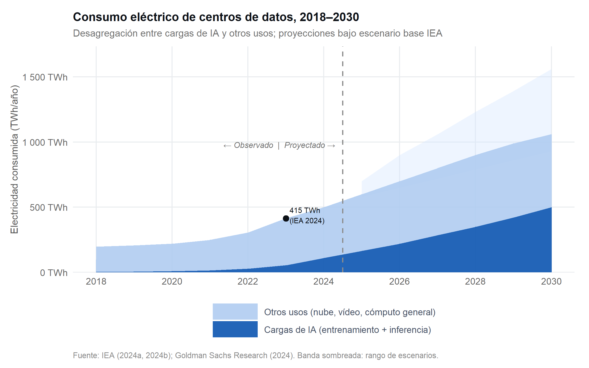
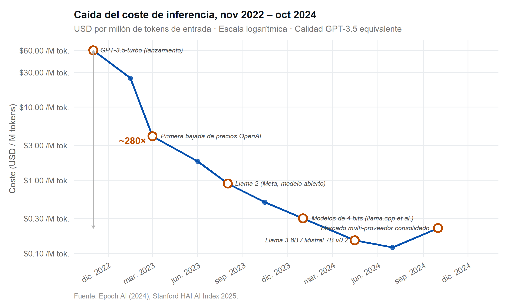
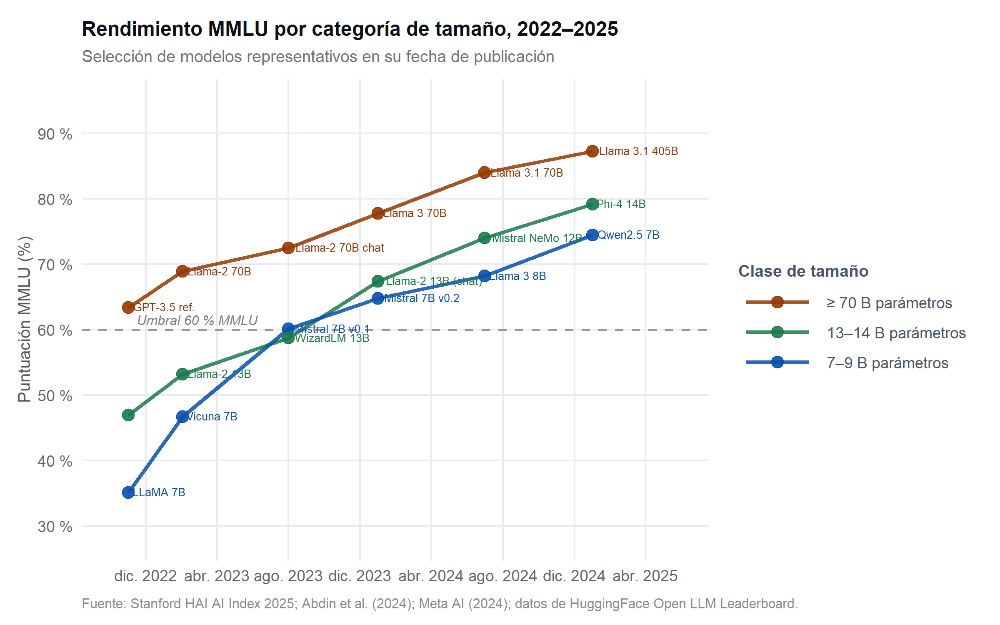
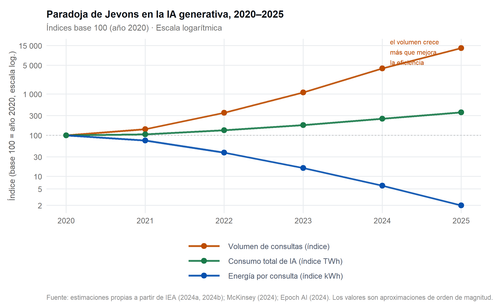
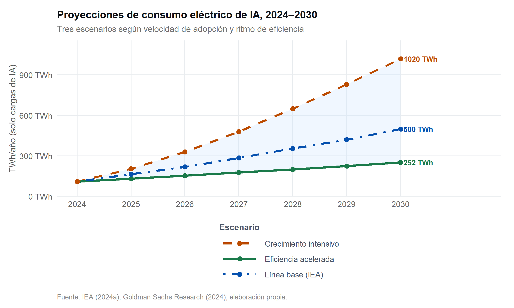

![]()

Consumo energético de la IA e impacto ambiental
Eficiencia, escala, tendencias 2022–2026 y perspectivas hasta 2030
Resumen
El despliegue masivo de modelos de lenguaje desde finales de 2022 ha renovado el debate sobre la sostenibilidad energética de la inteligencia artificial (IA). Este informe examina la evolución del consumo eléctrico atribuible a los centros de datos y a la IA entre 2022 y 2026, con proyecciones hasta 2030. Se analizan dos dinámicas divergentes: las ganancias de eficiencia por consulta —la reducción del coste de inferencia alcanzó un factor de ~280× entre noviembre de 2022 y octubre de 2024— y el crecimiento exponencial de la demanda agregada, que amenaza con anular dichas ganancias mediante un efecto rebote al estilo de la paradoja de Jevons. Se revisan asimismo los avances en modelos compactos de alto rendimiento, el consumo hídrico, las proyecciones institucionales de la Agencia Internacional de la Energía (IEA) y las respuestas regulatorias emergentes. La evidencia consolidada muestra que la eficiencia técnica es condición necesaria pero no suficiente para reducir la huella absoluta de la IA. Las políticas públicas y los compromisos corporativos verificables operan como factor diferenciador en los escenarios más optimistas.
1 Introducción
La publicación de ChatGPT el 30 de noviembre de 2022 marcó un punto de inflexión en la historia del despliegue masivo de modelos de lenguaje grande (large language models, LLM). En los dieciocho meses siguientes, la demanda de servicios de IA generativa creció a ritmos sin precedente, con cientos de millones de usuarios activos y miles de organizaciones integrando estos sistemas en flujos de trabajo críticos. Esta aceleración renovó un debate preexistente pero hasta entonces periférico: ¿cuánta energía consume la IA y qué implicaciones tiene para la transición ecológica?
El debate presenta una complejidad estructural que conviene explicitar desde el inicio. Por un lado, la eficiencia energética por consulta ha mejorado de forma espectacular: el coste de inferencia ha caído en torno a dos órdenes de magnitud en apenas dos años (Epoch AI, 2025; Stanford Human-Centered AI Institute, 2025), impulsado por mejoras en el hardware (arquitecturas GPU/TPU de nueva generación, memoria HBM), en los algoritmos (cuantización, destilación, atención eficiente) y en la competencia entre proveedores. Por otro lado, esta misma reducción de costes actúa como catalizador de adopción, elevando el volumen total de consultas y potencialmente anulando las ganancias absolutas en consumo —el fenómeno conocido como paradoja de Jevons o efecto rebote (Schwartz et al., 2020).
Este informe ofrece una revisión sistemática de los datos disponibles sobre consumo eléctrico e impacto ambiental de la IA para el período 2022–2026, con proyecciones hasta 2030. Las fuentes primarias incluyen informes institucionales de la Agencia Internacional de la Energía (International Energy Agency, 2024b, 2024a), el Índice de IA de Stanford (Stanford Human-Centered AI Institute, 2025), datos de Epoch AI (Epoch AI, 2025), literatura revisada por pares y análisis de consultoras de primer nivel (Goldman Sachs Research, 2024; McKinsey Global Institute, 2024). El documento incorpora código R reproducible para todos los gráficos.
Nota
Nota metodológica. La heterogeneidad de métricas empleadas en la literatura (kWh/consulta, TWh/año, gCO₂eq/parámetro, litros de agua por respuesta) dificulta la comparación directa entre estudios. A lo largo del informe se especifica la métrica de referencia en cada contexto y se advierte cuando los datos proceden de estimaciones con incertidumbre alta.
2 Centros de datos y demanda eléctrica global
2.1 Tendencia histórica observada
Los centros de datos consumieron aproximadamente 200 TWh anuales en 2018, una cifra que representaba en torno al 1% de la electricidad mundial (International Energy Agency, 2023). Este valor se mantuvo relativamente estable hasta 2021 gracias a mejoras continuas en la eficiencia operativa (PUE, Power Usage Effectiveness), la consolidación de infraestructuras y la migración a la nube. Sin embargo, la demanda se disparó a partir de 2022: la IEA estimó un consumo de ~415 TWh en 2023, cifra que supera en más de un 100% los valores de 2018 y que sitúa a los centros de datos como una de las categorías de consumo eléctrico de mayor crecimiento en la economía global (International Energy Agency, 2024a).
El factor determinante de este salto no fue únicamente la IA: el crecimiento del tráfico de vídeo (streaming, videollamadas, contenido generado por usuarios) y la expansión del comercio electrónico contribuyeron de forma sustancial. La IA generativa representa todavía una fracción del consumo total de los centros de datos —estimada entre el 15% y el 25% en 2024—, aunque se proyecta como el vector de crecimiento dominante en el período 2025–2030 (International Energy Agency, 2024b).
2.2 El papel del vídeo y la comparación con la IA
Una perspectiva crucial, con frecuencia omitida en los debates públicos, es que el vídeo online — streaming, plataformas como YouTube, TikTok o Netflix, y la videollamada corporativa— genera hoy la mayor parte del tráfico de Internet y una fracción sustancial de la carga sobre la infraestructura de red y los CDN (Cisco Systems, 2023). Esta contextualización no pretende minimizar la huella de la IA, sino evitar análisis desproporcionados: el consumo específico de la IA es real y crece aceleradamente, pero la infraestructura digital en su conjunto lleva décadas con una trayectoria de alto consumo. La diferencia relevante es la tasa de crecimiento: mientras el tráfico de vídeo crece a ritmos moderados y con mejoras continuas de compresión (codecs AV1, H.266), la demanda de cómputo de IA escala con la adopción y con la complejidad de los modelos.
3 Entrenamiento e inferencia: dos vectores de huella energética
La huella energética de la IA se distribuye entre dos etapas con perfiles muy distintos. El entrenamiento es un proceso intensivo, de duración limitada, que consume cómputo en grandes clústeres de GPU durante semanas o meses. Strubell et al. (2019) estimaron que el entrenamiento de un transformer de 2019 emitía tanta CO₂ equivalente como cinco automóviles durante su vida útil; desde entonces la escala de los modelos ha crecido varios órdenes de magnitud. El coste de entrenamiento de GPT-3 se estimó en ~$4,6 millones; el de modelos de la generación 2023–2024 supera en algunos casos los 100 millones de dólares en cómputo puro (Patterson et al., 2022; Stanford Human-Centered AI Institute, 2025). No obstante, el entrenamiento es un coste hundido amortizado sobre millones o miles de millones de inferencias.
La inferencia, por contraste, ocurre de forma distribuida y continua: cada consulta de usuario activa la ejecución del modelo. Luccioni et al. (2024) midieron el consumo de inferencia en escenarios reales y estimaron que los modelos de texto-imagen (diffusion) consumen entre 30 y 50 veces más energía por tarea que los modelos de texto, subrayando la heterogeneidad dentro de la propia IA. La relevancia de la inferencia crece con la adopción masiva: en 2024 se estima que el 80–90% del consumo energético imputable a la IA operativa corresponde a inferencia, no a entrenamiento (International Energy Agency, 2024b).
Un tercer vector, frecuentemente ignorado, es el agua. Los centros de datos de refrigeración por evaporación consumen cantidades significativas de agua dulce. Li et al. (2023) estimaron que GPT-3 requirió aproximadamente 700 000 litros de agua solo para la fase de entrenamiento, y que cada conversación de 20 a 50 preguntas con ChatGPT consume en torno a medio litro de agua indirectamente. Esta métrica adquiere especial relevancia en zonas con estrés hídrico donde se ubican grandes centros de datos.
4 La caída del coste de inferencia
4.1 Magnitud y factores impulsores
El fenómeno más llamativo del período 2022–2024 en la dimensión de eficiencia es la caída masiva del coste de inferencia. Según los análisis de Epoch AI recogidos en el Índice de IA de Stanford, el precio por millón de tokens de entrada para modelos equivalentes a GPT-3.5 se redujo en un factor de aproximadamente 280× entre noviembre de 2022 y octubre de 2024 (Epoch AI, 2025; Stanford Human-Centered AI Institute, 2025). Expresado de otra forma: una tarea de procesamiento de texto que costaba 60 dólares a finales de 2022 se ejecutaba por unos 0,20 dólares dos años más tarde.
Esta reducción obedece a la confluencia de cuatro factores. El primero es la mejora del hardware: los chips H100 y A100 de NVIDIA, junto con las TPU v5 de Google y los Trainium de AWS, ofrecen eficiencia energética por FLOP entre 3 y 6 veces superior a generaciones anteriores. El segundo es la optimización algorítmica: técnicas como la cuantización (quantization a 4 u 8 bits), la destilación del conocimiento (knowledge distillation), la atención de página (paged attention) y la especulación de decodificación (speculative decoding) reducen el cómputo requerido por inferencia sin pérdida significativa de calidad. El tercero es la competencia de mercado: la proliferación de modelos abiertos (familia Llama, Mistral, Falcon) y de proveedores de API ha comprimido los márgenes. El cuarto es la escala operativa: los grandes centros de inferencia con miles de aceleradores logran tasas de utilización que hacen más eficiente el coste por consulta.

4.2 Implicaciones para la huella por consulta
La reducción del coste monetario está correlacionada con una reducción del consumo energético por consulta, aunque la relación no es uno a uno: parte de la caída de precio refleja márgenes más ajustados, no solo eficiencia energética. Samsi et al. (2023) midieron experimentalmente el consumo de energía de modelos LLM en infraestructura de HPC y observaron variaciones de hasta 4× entre implementaciones del mismo modelo según el nivel de optimización. En cualquier caso, la tendencia general es inequívoca: el kWh por millón de tokens producidos ha descendido de forma sostenida, y la combinación de cuantización, destilación y batching eficiente ha acelerado esta mejora desde 2024.
5 Modelos compactos de alto rendimiento
5.1 La convergencia en benchmarks de referencia
Uno de los hallazgos más relevantes del período 2023–2025 es la aceleración del rendimiento de los modelos pequeños. El benchmark MMLU (Massive Multitask Language Understanding), que evalúa el conocimiento en 57 disciplinas académicas y profesionales, sirve como indicador de referencia ampliamente citado. Mientras que en 2022 los modelos de 7 000 millones de parámetros apenas superaban el 35% en MMLU —por debajo del umbral de significado estadístico frente al azar—, en 2025 modelos de esta misma categoría de tamaño superan el 74%, un nivel que rivalizaba con versiones anteriores de GPT-4 (Abdin et al., 2024; Meta AI, 2024).
Esta convergencia es el resultado de tres avances acumulativos. El primero es la mejora en la calidad y curación de los datos de entrenamiento (data quality over data quantity): modelos como Phi-3 Mini demostraron que un entrenamiento con datos de altísima calidad puede superar a modelos diez veces mayores entrenados con datos sin filtrar. El segundo es la arquitectura: las mejoras en mecanismos de atención (grouped query attention, sliding window attention) y en la función de activación permiten mayor rendimiento con menos parámetros. El tercero es la destilación: los modelos compactos recientes se entrenan imitando las salidas de modelos grandes (teacher-student distillation), absorbiendo conocimiento de forma mucho más eficiente que el aprendizaje desde cero (Desislavov et al., 2023).

5.2 Relevancia práctica y límites del benchmark
La convergencia en MMLU no implica que los modelos compactos sean intercambiables con los grandes en todas las tareas. Los modelos de 7–9 B parámetros mantienen desventajas notables en razonamiento matemático avanzado, planificación multi-paso, llamadas a herramientas complejas y coherencia en documentos muy largos. Sin embargo, para un amplio espectro de aplicaciones de producción —clasificación de texto, resumen, extracción de información estructurada, asistencia en código rutinario, generación de borradores— los modelos compactos ofrecen una alternativa viable con una fracción del coste y la huella energética. Esta disociación entre tamaño y rendimiento práctico es una de las tendencias más importantes del período analizado y tiene implicaciones directas para las organizaciones que buscan reducir su huella de IA sin sacrificar funcionalidad (Desislavov et al., 2023).
6 Demanda agregada y el efecto rebote
6.1 La paradoja de Jevons en la IA
La paradoja de Jevons —formulada por el economista William Stanley Jevons en 1865 al observar que las mejoras en la eficiencia de las máquinas de vapor no redujeron, sino que aumentaron el consumo total de carbón— es un marco analítico pertinente para la IA contemporánea. Cuando el coste marginal de una consulta se reduce en dos órdenes de magnitud, el número de consultas no permanece constante: la reducción de coste activa nuevos casos de uso, nuevos usuarios y nuevas integraciones que antes no eran viables económicamente (Schwartz et al., 2020).
Los datos disponibles respaldan esta hipótesis. El número de usuarios activos de servicios de IA generativa creció de estimaciones de ~100 millones en enero de 2023 a más de 1 000 millones en 2025, según datos consolidados de múltiples proveedores. Los volúmenes de llamadas a la API de modelos de lenguaje experimentaron crecimientos de entre 10× y 100× en el período 2022–2024. Al mismo tiempo, el número de organizaciones que integran IA en sus pipelines de producción casi se triplicó entre 2023 y 2024 (McKinsey Global Institute, 2024). El resultado neto es que el consumo total de energía atribuible a la IA ha crecido a pesar de las mejoras de eficiencia por unidad.

6.2 Estimaciones del consumo energético por consulta
Samsi et al. (2023) proporcionan una de las mediciones empíricas más detalladas: un modelo LLaMA de 65 B parámetros en hardware A100 consume entre 0,001 y 0,01 kWh por inferencia completa, dependiendo de la longitud del contexto y el nivel de optimización. Extrapolando a escala de servicio —con millones de consultas diarias—, la magnitud se vuelve significativa. Con estimaciones de 10 millones de consultas diarias a ChatGPT en 2023 y un consumo de ~0,001 kWh por consulta, el consumo anual de inferencia de un solo servicio asciende a ~3,65 GWh, comparable al consumo de una pequeña ciudad. En 2025, con el volumen de consultas multiplicado por al menos 10×, esta cifra supera fácilmente los 30 GWh anuales para un único servicio.
7 Agua y otros vectores de impacto
El consumo hídrico es el segundo vector de impacto ambiental más relevante tras la electricidad, aunque recibe menor atención mediática. Li et al. (2023) desarrollaron una metodología para estimar la huella hídrica (water footprint) de los modelos de IA, distinguiendo entre el agua consumida directamente en los centros de datos (refrigeración por evaporación) y el agua consumida upstream en la generación eléctrica (centrales termoeléctricas). Según sus estimaciones, el entrenamiento de GPT-3 requirió en torno a 700 000 litros de agua dulce en los centros de datos de Microsoft en Iowa —una región con estrés hídrico creciente— y cada conversación de 20 a 50 preguntas con GPT-4 consume indirectamente entre 0,33 y 1 litro, una magnitud no trivial a escala de millones de usuarios.
Más allá de la energía y el agua, la huella ambiental de la IA incluye el ciclo de vida del hardware. La fabricación de chips avanzados (TSMC N3, Intel 18A) es extraordinariamente intensiva en materiales escasos —galio, indio, germanio, neodimio— y en energía. Dodge et al. (2022) señalaron que en determinados contextos geográficos la fabricación del acelerador puede superar en carbono al consumo operativo durante toda su vida útil, especialmente si la red eléctrica opera con alta proporción de renovables. Esta perspectiva de ciclo de vida es esencial para evaluaciones ambientales completas y raramente aparece en los cálculos corporativos de carbono.
8 Proyecciones 2026–2030
8.1 Escenarios de la IEA y Goldman Sachs
La IEA publicó en 2024 su informe Energy and AI (International Energy Agency, 2024b), que proyecta el consumo eléctrico de centros de datos entre 945 y 1 400 TWh en 2030, dependiendo de la velocidad de adopción y de las medidas de eficiencia. La demanda imputable específicamente a cargas de IA podría representar entre el 40% y el 55% de ese total. Goldman Sachs Research estimó en 2024 que la demanda eléctrica de centros de datos asociada a IA crecería a una tasa compuesta anual del 15–20% hasta 2030, lo que implicaría una presión significativa sobre las redes eléctricas de EE. UU., Europa y Asia (Goldman Sachs Research, 2024). El informe identificó el suministro de energía —más que el hardware o el talento— como la restricción operativa más probable para los operadores de IA en el horizonte 2026–2028.

8.2 Factores que diferencian los escenarios
La divergencia entre escenarios no es meramente cuantitativa; refleja bifurcaciones cualitativas en el desarrollo del sector. El escenario de eficiencia acelerada requiere que la adopción de modelos compactos y optimizados sea la norma, no la excepción —es decir, que las organizaciones prioricen activamente el ajuste (fine-tuning) de modelos pequeños frente al uso de modelos de propósito general de escala máxima. También requiere que los grandes centros de inferencia operen con electricidad predominantemente renovable y que la presión regulatoria incentive la transparencia en el reporte de consumo. El escenario de crecimiento intensivo corresponde, por el contrario, a una adopción masiva impulsada por el bajo coste marginal sin disciplina energética, con agentic workflows que encadenan decenas de llamadas a modelos grandes por tarea y con la explosión de aplicaciones multimodales de alta carga computacional (vídeo, 3D, agentes autónomos).
El elemento más incierto es la velocidad de emergencia de los agentic systems: agentes de IA que ejecutan largas secuencias de acciones autónomas, consultando modelos repetidamente para planificar, ejecutar y verificar tareas. Este paradigma puede multiplicar por 10–100× el consumo de inferencia por tarea completada respecto a una única consulta de chatbot, y su adopción en 2025–2027 es el principal factor de riesgo al alza en los escenarios de consumo energético (International Energy Agency, 2024b).
9 Respuestas institucionales y del sector
9.1 Iniciativas corporativas
Los grandes operadores de infraestructura de IA han asumido compromisos de sostenibilidad de distinto alcance y credibilidad verificable. Google anunció en 2023 su objetivo de operar con energía libre de carbono las 24 horas del día los 7 días de la semana para 2030 (CFE-24/7), comprometiéndose a que cada unidad de cómputo sea cubierta por generación renovable en la misma hora y red local. Microsoft adoptó un marco similar, añadiendo compromisos de carbono negativo y positivo en agua para 2030. Amazon Web Services logró cubrir el 100% de su consumo eléctrico con energías renovables en 2023, aunque en términos de matching anual —un criterio menos exigente que el CFE 24/7. Schwartz et al. (2020) señalaron que la ausencia de estándares unificados de reporte hace que estas comparaciones sean frecuentemente engañosas.
9.2 Marco regulatorio emergente
La regulación de la huella energética de la IA avanza más lentamente que la tecnología. El Reglamento europeo de Inteligencia Artificial (AI Act, Reglamento UE 2024/1689) no incluye requisitos directos de eficiencia energética para modelos de propósito general, aunque obliga a los proveedores de modelos GPAI de impacto sistémico a publicar información sobre el consumo de energía de entrenamiento. La Directiva de Eficiencia Energética revisada (EED, 2023) y los requisitos de información de sostenibilidad corporativa (CSRD) obligan a los operadores de centros de datos en la UE a reportar PUE, consumo eléctrico y origen de la energía desde 2024. Este marco incipiente crea incentivos hacia la transparencia, pero carece de techos o penalizaciones directas al consumo.
10 Síntesis y conclusiones
El análisis de los datos del período 2022–2026 permite extraer varias conclusiones de carácter técnico y de política, que se ordenan por su solidez empírica.
La primera, y más robusta, es que la eficiencia energética por consulta ha mejorado de forma excepcional. La caída de ~280× en el coste de inferencia en dos años no tiene precedente en la historia reciente de la computación y ha democratizado el acceso a capacidades de IA que antes requerían infraestructura de alto costo. Esta mejora está documentada con datos de múltiples fuentes independientes (Epoch AI, 2025; Stanford Human-Centered AI Institute, 2025) y es atribuible de forma demostrable a avances en hardware, algoritmos y competencia de mercado.
La segunda es que el consumo total de energía imputable a la IA ha crecido a pesar de esas mejoras, confirmando la operatividad del efecto rebote en este contexto. La demanda agregada de cómputo para IA ha crecido más rápido que la eficiencia unitaria, lo que implica que los beneficios de eficiencia son condición necesaria pero no suficiente para contener la huella absoluta (International Energy Agency, 2024b).
La tercera es que los modelos compactos son ahora una alternativa técnicamente viable para un amplio espectro de aplicaciones de producción. La consolidación de modelos de 7–9 B parámetros con rendimiento MMLU superior al 74% en 2025 —umbral que en 2022 requería modelos de más de 100 B parámetros— supone una reducción potencial de entre 10× y 30× en el consumo energético por tarea para las organizaciones que adopten modelos ajustados a sus necesidades específicas en lugar de modelos de propósito general de escala máxima (Desislavov et al., 2023).
La cuarta es que las proyecciones para 2030 tienen una incertidumbre muy alta, y el rango entre escenarios optimista y pesimista es de un factor ~4× en términos de TWh de IA. El factor diferenciador no es principalmente tecnológico —las mejoras de eficiencia seguirán su trayectoria histórica con alta probabilidad— sino conductual y regulatorio: ¿adoptarán las organizaciones modelos compactos y ajustados, o recurrirán sistemáticamente a modelos gigantes de propósito general? ¿Exigirá la regulación reporte verificable y mecanismos de matching energético en tiempo real?
| Indicador | 2022 | 2024 | 2026 (proyección) | Tendencia |
|---|---|---|---|---|
| Consumo eléctrico centros de datos (global) | ~305 TWh/año | ~500 TWh/año | 700–900 TWh/año | ↑↑ Crecimiento intenso |
| Fracción atribuible a IA | ~9 % | ~22 % | 30–40 % | ↑ Creciente |
| Coste de inferencia (USD/M tokens GPT-3.5) | ~$60 | ~$0,20 | <$0,10 | ↓↓ Descenso sostenido |
| Rendimiento MMLU modelos 7–9 B | ~35 % | ~68 % | >75 % | ↑↑ Mejora rápida |
| Agua directa por conversación (est.) | ~0,5 L | ~0,3 L | ~0,1–0,2 L | ↓ Descenso moderado |
| Número usuarios IA generativa | ~1–5 M | ~500–800 M | >1 000 M | ↑↑ Expansión masiva |
En términos de agenda de investigación, las brechas más relevantes son tres. La primera es la ausencia de datos auditados y públicos sobre el consumo real de los grandes servicios de IA —las cifras disponibles son estimaciones externas, frecuentemente con incertidumbre de un factor 2×–3×. La segunda es la escasez de mediciones empíricas de consumo energético para agentic systems, que se proyectan como el vector de crecimiento dominante pero para los que casi no existe literatura empírica (Luccioni et al., 2024). La tercera es la integración del ciclo de vida del hardware en los análisis de sostenibilidad, incluyendo la extracción de minerales críticos y el tratamiento de residuos electrónicos.
Para los educadores y gestores que trabajan con IA, la implicación práctica más concreta es la necesidad de adoptar una métrica de evaluación que va más allá del rendimiento y el coste: el consumo en kWh por tarea completada, el origen de la electricidad del proveedor elegido y la posibilidad de sustituir un modelo grande por uno pequeño ajustado a la tarea específica son preguntas que deberían formar parte del proceso de selección de herramientas de IA en cualquier organización que haya asumido compromisos de sostenibilidad.
Recursos complementarios
Los siguientes recursos ofrecen acceso directo a datos primarios y herramientas de cálculo citadas o relevantes para profundizar en los temas tratados:
- IEA Data & Statistics — Datos de electricidad y centros de datos: https://www.iea.org/data-and-statistics
- Stanford AI Index 2025 — Informe anual de referencia: https://hai.stanford.edu/ai-index/2025-ai-index-report
- Epoch AI — Base de datos de cómputo y eficiencia de modelos: https://epochai.org
- ML CO₂ Impact Calculator (Lottick et al. / Lacoste et al.) — Estimación de huella de entrenamiento: https://mlco2.github.io/impact/
- Open LLM Leaderboard (Hugging Face) — Benchmarks actualizados de modelos abiertos: https://huggingface.co/spaces/open-llm-leaderboard/open_llm_leaderboard
- Green Software Foundation — Estándares y herramientas para software sostenible: https://greensoftware.foundation
- EU AI Act Explorer — Navegador del Reglamento UE 2024/1689: https://artificialintelligenceact.eu
Sobre autoría y metodología
NotaNaturaleza del documento y asistencia computacional
Este informe es un documento técnico de síntesis elaborado a partir de fuentes primarias y literatura revisada por pares. El proceso de trabajo combinó la revisión y selección de evidencia por parte del autor con asistencia de Claude (Anthropic, modelo Sonnet), empleado como agente colaborador científico en las siguientes tareas: estructuración del argumento y borradores de texto, generación del código R reproducible para las visualizaciones, codificación de las entradas bibliográficas en formato BibTeX y diseño de los temas de estilo SCSS.
Todos los contenidos relevantes —afirmaciones empíricas, interpretaciones, referencias y visualizaciones— han sido revisados y validados por el autor, quien asume la responsabilidad por el contenido del documento. Los datos numéricos empleados en los gráficos son estimaciones reconstruidas a partir de las fuentes citadas; no deben interpretarse como series estadísticas oficiales sin consultar los informes originales referenciados.
El código fuente del documento (Quarto .qmd, fichero .bib y hojas de estilo .scss) está disponible para su reutilización y adaptación con fines académicos y docentes.
Referencias
Abdin, M., Aneja, J., Awadalla, H., Awasthi, A., Awan, A. A., et al. (2024). Phi-3 technical report: A highly capable language model locally on your phone. arXiv preprint, arXiv:2404.14219. https://arxiv.org/abs/2404.14219
Cisco Systems. (2023). Cisco Visual Networking Index: Global Internet Traffic Forecasts and Trends [White Paper]. Cisco. https://www.cisco.com/c/en/us/solutions/collateral/executive-perspectives/annual-internet-report/white-paper-c11-741490.html
Desislavov, R., Alonso, E., Lepri, B., & Hain, D. (2023). Trends in AI Inference Energy Consumption: Beyond the Performance-vs-Parameter Laws of Deep Learning. Sustainable Computing: Informatics and Systems, 38, 100857. https://doi.org/10.1016/j.suscom.2023.100857
Dodge, J., Prewitt, T., Tachet des Combes, R., Sild, E., Zaldivar, J., Smith, N. A., & Schwartz, R. (2022). Measuring the carbon intensity of AI in cloud instances. 1877-1894. https://doi.org/10.1145/3531146.3533234
Epoch AI. (2025). Inference economics of language models [Technical Report]. Epoch AI. https://epoch.ai/blog/inference-economics-of-language-models
Goldman Sachs Research. (2024). AI power demand is booming: Who will supply it? [Equity Research Report]. Goldman Sachs. https://www.goldmansachs.com/intelligence/pages/ai-investment-forecast-to-approach-200-billion-globally-by-2025.html
International Energy Agency. (2023). Data Centres and Data Transmission Networks [Report]. IEA. https://www.iea.org/energy-system/buildings/data-centres-and-data-transmission-networks
International Energy Agency. (2024a). Electricity 2024: Analysis and forecast to 2026 [Report]. IEA. https://www.iea.org/reports/electricity-2024
International Energy Agency. (2024b). Energy and AI [Report]. IEA. https://www.iea.org/reports/energy-and-ai
Li, P., Yang, J., Islam, M. A., & Ren, S. (2023). Making AI less "thirsty": Uncovering and addressing the secret water footprint of AI models. arXiv preprint, arXiv:2304.03271. https://arxiv.org/abs/2304.03271
Luccioni, A. S., Jernite, Y., & Strubell, E. (2024). Power hungry processing: Watts driving the cost of AI deployment? 85-99. https://doi.org/10.1145/3630106.3658542
McKinsey Global Institute. (2024). The state of AI in 2024: GenAI’s breakout year [Report]. McKinsey & Company. https://www.mckinsey.com/capabilities/quantumblack/our-insights/the-state-of-ai
Meta AI. (2024). Introducing Meta Llama 3: The most capable openly available LLM to date. Meta AI Blog. https://ai.meta.com/blog/meta-llama-3/
Patterson, D., Gonzalez, J., Hölzle, U., Le, Q., Liang, C., Munguia, L.-M., Rothchild, D., So, D. R., Texier, M., & Dean, J. (2022). The carbon footprint of machine learning and recommendations for its measurement and reduction. arXiv preprint, arXiv:2104.10350v4. https://arxiv.org/abs/2104.10350
Samsi, S., Zhao, D., McDonald, J., Li, B., Michaleas, A., Jones, M., Bergkvist, W., Gadepally, V., Tiwari, D., & Reuther, A. (2023). From Words to Watts: Benchmarking the Energy Costs of Large Language Model Inference. 1-9. https://doi.org/10.1109/HPEC58863.2023.10363447
Schwartz, R., Dodge, J., Smith, N. A., & Etzioni, O. (2020). Green AI. Communications of the ACM, 63(12), 54-63. https://doi.org/10.1145/3381831
Stanford Human-Centered AI Institute. (2025). AI Index Report 2025 [Annual Report]. Stanford University. https://hai.stanford.edu/ai-index/2025-ai-index-report
Strubell, E., Ganesh, A., & McCallum, A. (2019). Energy and policy considerations for deep learning in NLP. Proceedings of the 57th Annual Meeting of the Association for Computational Linguistics, 3645-3650. https://doi.org/10.18653/v1/P19-1355